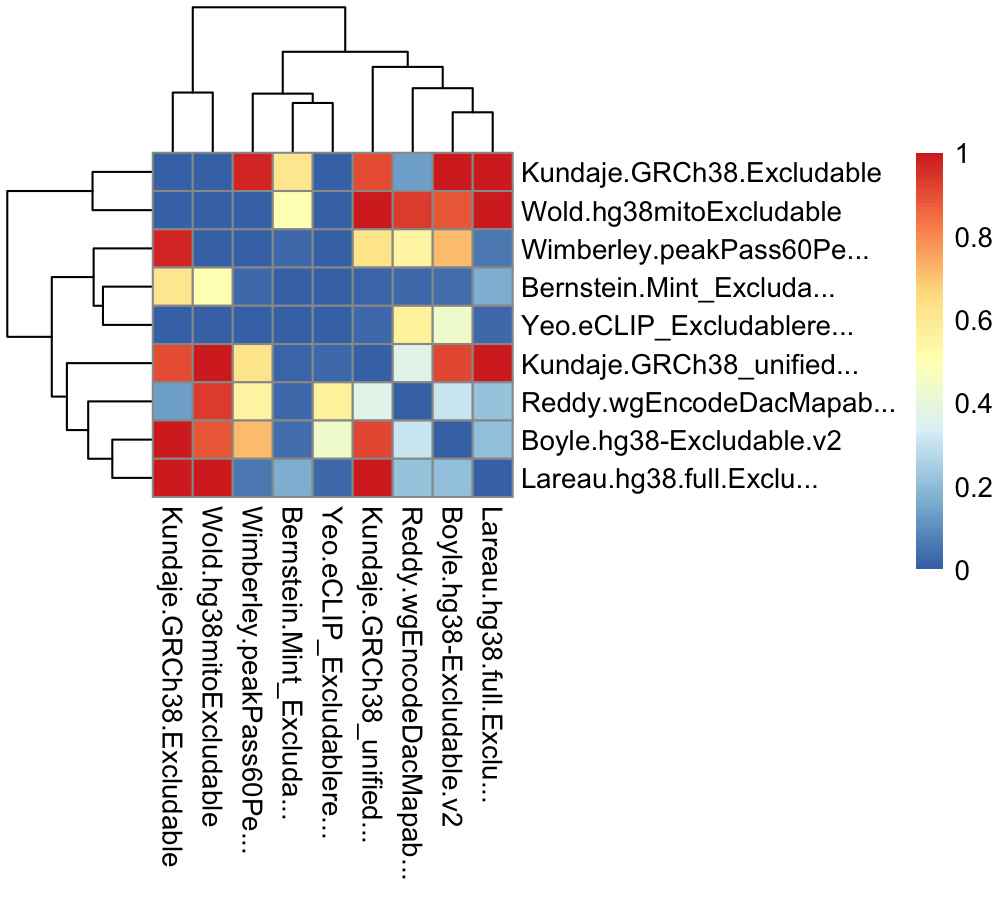

Genomic ranges of problematic genomic regions that should be avoided when working with genomic data. For human, mouse, and selected model organisms.

TL;DR - For human hg38 genome assembly, Anshul recommends ENCFF356LFX exclusion list regions.
BED files of exclusion regions are available on the ENCODE project website (Amemiya, Kundaje, and Boyle 2019). Human (hg19, hg38) and mouse (mm9, mm10) exclusion regions are available. However, exclusion lists generated by multiple labs often create uncertainty what to use. The purpose of this package is to provide a unified place for informed retrieval of exclusion regions.
Naming convention: <genome assembly>.<lab>.<original file name>, e.g., hg19.Birney.wgEncodeDacMapabilityConsensusExcludable.
Download all data from the Google Drive folder
See make-data.R how to create the excluderanges GRanges objects.
Install excluderanges
if (!requireNamespace("BiocManager", quietly = TRUE)) {
install.packages("BiocManager")
}
# Install the development version of Bioconductor (need 3.14 and above)
# BiocManager::install(version = "devel")
# Check that you have a valid Bioconductor installation
# BiocManager::valid()
BiocManager::install("mdozmorov/excluderanges")Use excluderanges
# hg38 excluderanges coordinates
download.file(url = "https://drive.google.com/uc?export=download&id=1Jy_7cvFj5ZHUUwHgGUKZeFk8lFCalpKk", destfile = "hg38.Kundaje.GRCh38_unified_Excludable.rds")
excludeGR.hg38.Kundaje.1 <- readRDS(file = "hg38.Kundaje.GRCh38_unified_Excludable.rds")
excludeGR.hg38.Kundaje.1> excludeGR.hg38.Kundaje.1
GRanges object with 910 ranges and 0 metadata columns:
seqnames ranges strand
<Rle> <IRanges> <Rle>
[1] chr1 628903-635104 *
[2] chr1 5850087-5850571 *
[3] chr1 8909610-8910014 *
[4] chr1 9574580-9574997 *
[5] chr1 32043823-32044203 *
... ... ... ...
[906] chrY 11290797-11334278 *
[907] chrY 11493053-11592850 *
[908] chrY 11671014-11671046 *
[909] chrY 11721528-11749472 *
[910] chrY 56694632-56889743 *
-------
seqinfo: 24 sequences from hg38 genomeSave the data in a BED file, if needed.
rtracklayer::export(excludeGR.hg38.Kundaje.1, "hg38.Kundaje.GRCh38_unified_Excludable.bed", format = "bed")We can load other excludable regions for the hg38 genome assembly and compare them.
download.file(url = "https://drive.google.com/uc?export=download&id=13RQmvqwC9qaYE65i74U1N-Rb4R-Sy2ud", destfile = "hg38.Bernstein.Mint_Excludable_GRCh38.rds")
excludeGR.hg38.Bernstein <- readRDS(file = "hg38.Bernstein.Mint_Excludable_GRCh38.rds")
download.file(url = "https://drive.google.com/uc?export=download&id=1ULI6uvs0vTlPcZ5yyLdsSgX1mIqnnlpp", destfile = "hg38.Kundaje.GRCh38.Excludable.rds")
excludeGR.hg38.Kundaje.2 <- readRDS(file = "hg38.Kundaje.GRCh38.Excludable.rds")
download.file(url = "https://drive.google.com/uc?export=download&id=1TA5Y8nmutoAyhL8XEl2qQTnmW6gl8CAg", destfile = "hg38.Reddy.wgEncodeDacMapabilityConsensusExcludable.hg38.rds")
excludeGR.hg38.Reddy <- readRDS(file = "hg38.Reddy.wgEncodeDacMapabilityConsensusExcludable.hg38.rds")
download.file(url = "https://drive.google.com/uc?export=download&id=1psVWkiaLy4nxAWssqv5dEZyNUrDIm005", destfile = "hg38.Wold.hg38mitoExcludable.rds")
excludeGR.hg38.Wold <- readRDS(file = "hg38.Wold.hg38mitoExcludable.rds")
download.file(url = "https://drive.google.com/uc?export=download&id=1pwbBEOHFfnVb6I9UljF3bJQLF3et4WV7", destfile = "hg38.Yeo.eCLIP_Excludableregions.hg38liftover.bed.fixed.rds")
excludeGR.hg38.Yeo <- readRDS(file = "hg38.Yeo.eCLIP_Excludableregions.hg38liftover.bed.fixed.rds")Compare the number of excludable regions.
library(ggplot2)
mtx_to_plot <- data.frame(Count = c(length(excludeGR.hg38.Bernstein),
length(excludeGR.hg38.Kundaje.1),
length(excludeGR.hg38.Kundaje.2),
length(excludeGR.hg38.Reddy),
length(excludeGR.hg38.Wold),
length(excludeGR.hg38.Yeo)),
Source = c("Bernstein.Mint_Excludable_GRCh38",
"Kundaje.GRCh38_unified_Excludable",
"Kundaje.GRCh38.Excludable",
"Reddy.wgEncodeDacMapabilityConsensusExcludable",
"Wold.hg38mitoExcludable",
"Yeo.eCLIP_Excludableregions.hg38liftover.bed"))
# Order Source by the number of regions
mtx_to_plot$Source <- factor(mtx_to_plot$Source, levels = mtx_to_plot$Source[order(mtx_to_plot$Count)])
ggplot(mtx_to_plot, aes(x = Source, y = Count, fill = Source)) +
geom_bar(stat = "identity") +
coord_flip() +
theme_bw() + theme(legend.position = "none")
ggsave("man/figures/excluderanges_hg38_count.png", width = 5.5, height = 2)Compare the width of excludable regions. log2 scale because of heavy right tail distributions.
library(ggridges)
mtx_to_plot <- data.frame(Width = c(width(excludeGR.hg38.Bernstein),
width(excludeGR.hg38.Kundaje.1),
width(excludeGR.hg38.Kundaje.2),
width(excludeGR.hg38.Reddy),
width(excludeGR.hg38.Wold),
width(excludeGR.hg38.Yeo)),
Source = c(rep("Bernstein.Mint_Excludable_GRCh38", length(excludeGR.hg38.Bernstein)),
rep("Kundaje.GRCh38_unified_Excludable", length(excludeGR.hg38.Kundaje.1)),
rep("Kundaje.GRCh38.Excludable", length(excludeGR.hg38.Kundaje.2)),
rep("Reddy.wgEncodeDacMapabilityConsensusExcludable", length(excludeGR.hg38.Reddy)),
rep("Wold.hg38mitoExcludable", length(excludeGR.hg38.Wold)),
rep("Yeo.eCLIP_Excludableregions.hg38liftover.bed", length(excludeGR.hg38.Yeo))))
ggplot(mtx_to_plot, aes(x = log2(Width), y = Source, fill = Source)) +
geom_density_ridges() +
theme_bw() + theme(legend.position = "none")
ggsave("man/figures/excluderanges_hg38_width.png", width = 5.5, height = 2)We can investigate the total width of each set of excludable ranges.
mtx_to_plot <- data.frame(TotalWidth = c(sum(width(excludeGR.hg38.Bernstein)),
sum(width(excludeGR.hg38.Kundaje.1)),
sum(width(excludeGR.hg38.Kundaje.2)),
sum(width(excludeGR.hg38.Reddy)),
sum(width(excludeGR.hg38.Wold)),
sum(width(excludeGR.hg38.Yeo))),
Source = c("Bernstein.Mint_Excludable_GRCh38",
"Kundaje.GRCh38_unified_Excludable",
"Kundaje.GRCh38.Excludable",
"Reddy.wgEncodeDacMapabilityConsensusExcludable",
"Wold.hg38mitoExcludable",
"Yeo.eCLIP_Excludableregions.hg38liftover"))
ggplot(mtx_to_plot, aes(x = TotalWidth, y = Source, fill = Source)) +
geom_bar(stat="identity") + scale_x_log10() + scale_y_discrete(label=abbreviate) +
xlab("log10 total width")
ggsave("man/figures/excluderanges_hg38_sumwidth.png", width = 6.5, height = 2)We can compare Jaccard overlap between those sets of excludable regions.
library(pheatmap)
library(stringr)
# Jaccard calculations
jaccard <- function(gr_a, gr_b) {
intersects <- GenomicRanges::intersect(gr_a, gr_b, ignore.strand = TRUE)
intersection <- sum(width(intersects))
union <- sum(width(GenomicRanges::union(gr_a, gr_b, ignore.strand = TRUE)))
DataFrame(intersection, union,
jaccard = intersection/union,
n_intersections = length(intersects))
}
# List and names of all excludable regions
all_excludeGR_list <- list(excludeGR.hg38.Bernstein,
excludeGR.hg38.Kundaje.1,
excludeGR.hg38.Kundaje.2,
excludeGR.hg38.Reddy,
excludeGR.hg38.Wold,
excludeGR.hg38.Yeo)
all_excludeGR_name <- c("Bernstein.Mint_Excludable_GRCh38",
"Kundaje.GRCh38_unified_Excludable",
"Kundaje.GRCh38.Excludable",
"Reddy.wgEncodeDacMapabilityConsensusExcludable",
"Wold.hg38mitoExcludable",
"Yeo.eCLIP_Excludableregions.hg38liftover")
# Correlation matrix, empty
mtx_to_plot <- matrix(data = 0, nrow = length(all_excludeGR_list), ncol = length(all_excludeGR_list))
# Fill it in
for (i in 1:length(all_excludeGR_list)) {
for (j in 1:length(all_excludeGR_list)) {
# If diagonal, set to zero
if (i == j) mtx_to_plot[i, j] <- 0
# Process only one half, the other is symmetric
if (i > j) {
mtx_to_plot[i, j] <- mtx_to_plot[j, i] <- jaccard(all_excludeGR_list[[i]], all_excludeGR_list[[j]])[["jaccard"]]
}
}
}
# Trim row/colnames
rownames(mtx_to_plot) <- colnames(mtx_to_plot) <- str_trunc(all_excludeGR_name, width = 25)
# Save the plot
png("man/figures/excluderanges_hg38_jaccard.png", width = 1000, height = 900, res = 200)
pheatmap(data.matrix(mtx_to_plot))
dev.off()
Note that some excludable ranges objects contain six columns, implying there may be some interesting metadata. Let’s explore one.
mcols(excludeGR.hg38.Reddy)
mtx_to_plot <- as.data.frame(table(mcols(excludeGR.hg38.Reddy)[["name"]]))
colnames(mtx_to_plot) <- c("Type", "Number")
mtx_to_plot <- mtx_to_plot[order(mtx_to_plot$Number), ]
mtx_to_plot$Type <- factor(mtx_to_plot$Type, levels = mtx_to_plot$Type)
ggplot(mtx_to_plot, aes(x = Number, y = Type, fill = Type)) +
geom_bar(stat="identity") +
theme_bw() + theme(legend.position = "none")
ggsave("man/figures/excluderanges_hg38_Reddy_metadata.png", width = 5, height = 2.5)One may decide to combine the excludable ranges from all labs, although from previous results we may decide to follow Anshul’s advice advice about the ENCFF356LFX exclusion list regions and use the excludeGR.hg38.Kundaje.1 object.
excludeGR.hg38.all <- reduce(c(excludeGR.hg38.Bernstein, excludeGR.hg38.Kundaje.1, excludeGR.hg38.Kundaje.2, excludeGR.hg38.Reddy, excludeGR.hg38.Wold, excludeGR.hg38.Yeo))
# Keep only standard chromosomes
excludeGR.hg38.all <- keepStandardChromosomes(excludeGR.hg38.all, pruning.mode = "coarse")
print(length(excludeGR.hg38.all))
# [1] 13239
summary(width(excludeGR.hg38.all))
# Min. 1st Qu. Median Mean 3rd Qu. Max.
# 5 1778 2306 8153 2859 5407757 Centromeres, telomeres, etc.
Besides the ENCODE-produced excludable regions, we may want to exclude centromeres, telomeres, and other gap locations. The “Gap Locations” track for Homo Sapiens is available for the GRcH37/hg19 genome assembly as a UCSC ‘gap’ table. It can be retrieved from AnnotationHub, but lacks the metadata columns needed to decide the type of gaps.
suppressPackageStartupMessages(library(AnnotationHub))
ah <- AnnotationHub()
# Search for the gap track
# ahData <- query(ah, c("gap", "Homo sapiens", "hg19"))
# ahData[ctcfData$title == "Gap"]
gaps <- ahData[["AH6444"]]> gaps
UCSC track 'gap'
UCSCData object with 457 ranges and 0 metadata columns:
seqnames ranges strand
<Rle> <IRanges> <Rle>
[1] chr1 124535435-142535434 *
[2] chr1 121535435-124535434 *
[3] chr1 3845269-3995268 *
[4] chr1 13219913-13319912 *
[5] chr1 17125659-17175658 *
... ... ... ...
[453] chr6_ssto_hap7 4639807-4661556 *
[454] chr6_ssto_hap7 4723510-4774367 *
[455] chr6_ssto_hap7 4783799-4836049 *
[456] chr17_ctg5_hap1 1256795-1306794 *
[457] chr17_ctg5_hap1 1588969-1638968 *
-------
seqinfo: 93 sequences (1 circular) from hg19 genomeThe UCSC ‘gap’ table provides better granularity about the types of gaps available. E.g., for human, hg19, we have the following types and the number of gaps.
Those objects are provided as individual GRanges.
Naming convention: <genome assembly>.UCSC.<gap type>, e.g., hg19.UCSC.gap_centromere.
Download all data from the Google Drive folder
We can similarly load any gap type object.
download.file(url = "https://drive.google.com/uc?export=download&id=1uno7XzgCdFJeMjYI6GMfU5bAwEBWaUlR", destfile = "hg19.UCSC.centromere.rds")
gapsGR_hg19_centromere <- readRDS(file = "hg19.UCSC.centromere.rds")
gapsGR_hg19_centromere> gapsGR_hg19_centromere
GRanges object with 24 ranges and 6 metadata columns:
seqnames ranges strand | bin ix n size type bridge
<Rle> <IRanges> <Rle> | <numeric> <numeric> <character> <numeric> <character> <character>
2 chr1 121535434-124535434 * | 23 1270 N 3000000 centromere no
184 chr21 11288129-14288129 * | 10 22 N 3000000 centromere no
199 chr22 13000000-16000000 * | 10 3 N 3000000 centromere no
206 chr19 24681782-27681782 * | 1 410 N 3000000 centromere no
224 chrY 10104553-13104553 * | 10 105 N 3000000 centromere no
... ... ... ... . ... ... ... ... ... ...
439 chr6 58830166-61830166 * | 16 628 N 3000000 centromere no
453 chr5 46405641-49405641 * | 14 452 N 3000000 centromere no
460 chr4 49660117-52660117 * | 1 447 N 3000000 centromere no
476 chr3 90504854-93504854 * | 2 784 N 3000000 centromere no
481 chr2 92326171-95326171 * | 20 770 N 3000000 centromere no
-------
seqinfo: 24 sequences from hg19 genomeCentromeres for the hg38 genome assembly
Note that the UCSC ‘gap’ table for the hg38 human genome assembly does not contain genomic coordinates for the “centromere” gap type. These can be obtained from the rCGH package as follows:
suppressPackageStartupMessages(library(rCGH))
suppressPackageStartupMessages(library(GenomicRanges))
# hg38 # data.frame
# Adjust chromosome names
hg38$chrom[hg38$chrom == 23] <- "X"
hg38$chrom[hg38$chrom == 24] <- "Y"
hg38$chrom <- paste0("chr", hg38$chrom)
# Make GRanges object
hg38.UCSC.centromere <- makeGRangesFromDataFrame(hg38, seqnames.field = "chrom", start.field = "centromerStart", end.field = "centromerEnd")
# Assign seqinfo data
seqlengths(hg38.UCSC.centromere) <- hg38$length
genome(hg38.UCSC.centromere) <- "hg38"
# Resulting object
hg38.UCSC.centromere
#> GRanges object with 24 ranges and 0 metadata columns:
#> seqnames ranges strand
#> <Rle> <IRanges> <Rle>
#> [1] chr1 121535434-124535434 *
#> [2] chr2 92326171-95326171 *
#> [3] chr3 90504854-93504854 *
#> [4] chr4 49660117-52660117 *
#> [5] chr5 46405641-49405641 *
#> ... ... ... ...
#> [20] chr20 26369569-29369569 *
#> [21] chr21 11288129-14288129 *
#> [22] chr22 13000000-16000000 *
#> [23] chrX 58632012-61632012 *
#> [24] chrY 10104553-13104553 *
#> -------
#> seqinfo: 24 sequences from hg38 genomeThe rCGH package also contains data for the hg19 and hg18 genomes. The hg19 centromere data is equivalent to the hg19.UCSC.centromere object provided in our excluderanges package.
Source data for the excludable regions
| Object | Number.of.regions | Assembly | Lab | Number.of.columns | Source |
|---|---|---|---|---|---|
| ce10.Kundaje.ce10-Excludable.rds | 122 | ce10 | Anshul Kundaje, Stanford | 3 | http://mitra.stanford.edu/kundaje/akundaje/release/Excludables/ce10-C.elegans |
| dm3.Kundaje.dm3-Excludable.rds | 492 | dm3 | Anshul Kundaje, Stanford | 3 | http://mitra.stanford.edu/kundaje/akundaje/release/Excludables/dm3-D.melanogaster/ |
| hg19.Bernstein.Mint_Excludable_hg19.rds | 9035 | hg19 | Bradley Bernstein, Broad | 6 | https://www.encodeproject.org/files/ENCFF200UUD/ |
| hg19.Birney.wgEncodeDacMapabilityConsensusExcludable.rds | 411 | hg19 | Ewan Birney, EBI | 6 | https://www.encodeproject.org/files/ENCFF001TDO/ |
| hg19.Crawford.wgEncodeDukeMapabilityRegionsExcludable.rds | 1649 | hg19 | Gregory Crawford, Duke | 6 | https://www.encodeproject.org/files/ENCFF001THR/ |
| hg19.Wold.hg19mitoExcludable.rds | 295 | hg19 | Barbara Wold, Caltech | 3 | https://www.encodeproject.org/files/ENCFF055QTV/ |
| hg19.Yeo.eCLIP_Excludableregions.hg19.rds | 57 | hg19 | Gene Yeo, UCSD | 6 | https://www.encodeproject.org/files/ENCFF039QTN/ |
| hg38.Bernstein.Mint_Excludable_GRCh38.rds | 12052 | hg38 | Bradley Bernstein, Broad | 6 | https://www.encodeproject.org/files/ENCFF023CZC/ |
| hg38.Kundaje.GRCh38.Excludable.rds | 38 | hg38 | Anshul Kundaje, Stanford | 3 | https://www.encodeproject.org/files/ENCFF356LFX/ |
| hg38.Kundaje.GRCh38_unified_Excludable.rds | 910 | hg38 | Anshul Kundaje, Stanford | 3 | https://www.encodeproject.org/files/ENCFF419RSJ/ |
| hg38.Reddy.wgEncodeDacMapabilityConsensusExcludable.hg38.rds | 401 | hg38 | Tim Reddy, Duke | 6 | https://www.encodeproject.org/files/ENCFF220FIN/ |
| hg38.Wold.hg38mitoExcludable.rds | 299 | hg38 | Barbara Wold, Caltech | 3 | https://www.encodeproject.org/files/ENCFF940NTE/ |
| hg38.Yeo.eCLIP_Excludableregions.hg38liftover.bed.fixed.rds | 56 | hg38 | Gene Yeo, UCSD | 6 | https://www.encodeproject.org/files/ENCFF269URO/ |
| mm10.Hardison.Excludable.full.rds | 7865 | mm10 | Ross Hardison, PennState | 3 | https://www.encodeproject.org/files/ENCFF790DJT/ |
| mm10.Hardison.psuExcludable.mm10.rds | 5552 | mm10 | Ross Hardison, PennState | 3 | https://www.encodeproject.org/files/ENCFF226BDM/ |
| mm10.Kundaje.anshul.Excludable.mm10.rds | 3010 | mm10 | Anshul Kundaje, Stanford | 3 | https://www.encodeproject.org/files/ENCFF999QPV/ |
| mm10.Kundaje.mm10.Excludable.rds | 164 | mm10 | Anshul Kundaje, Stanford | 3 | https://www.encodeproject.org/files/ENCFF547MET/ |
| mm10.Wold.mm10mitoExcludable.rds | 123 | mm10 | Barbara Wold, Caltech | 3 | https://www.encodeproject.org/files/ENCFF759PJK/ |
| mm9.Wold.mm9mitoExcludable.rds | 123 | mm9 | Barbara Wold, Caltech | 3 | https://www.encodeproject.org/files/ENCFF299EZH/ |
Citation
Below is the citation output from using citation('excluderanges') in R. Please run this yourself to check for any updates on how to cite excluderanges.
print(citation("excluderanges"), bibtex = TRUE)
#>
#> Dozmorov MG, Davis E, Mu W, Lee S, Triche T, Phanstiel D, Love M
#> (2021). _excluderanges_.
#> https://github.com/mdozmorov/excluderanges/excluderanges - R package
#> version 0.99.3, <URL: https://github.com/mdozmorov/excluderanges>.
#>
#> A BibTeX entry for LaTeX users is
#>
#> @Manual{,
#> title = {excluderanges},
#> author = {Mikhail G. Dozmorov and Eric Davis and Wancen Mu and Stuart Lee and Tim Triche and Douglas Phanstiel and Michael Love},
#> year = {2021},
#> url = {https://github.com/mdozmorov/excluderanges},
#> note = {https://github.com/mdozmorov/excluderanges/excluderanges - R package version 0.99.3},
#> }Code of Conduct
Please note that the excluderanges project is released with a Contributor Code of Conduct. By contributing to this project, you agree to abide by its terms.
This package was developed using biocthis.
References
Amemiya, Haley M, Anshul Kundaje, and Alan P Boyle. 2019. “The ENCODE Blacklist: Identification of Problematic Regions of the Genome.” Sci Rep 9 (1): 9354. https://doi.org/10.1038/s41598-019-45839-z.